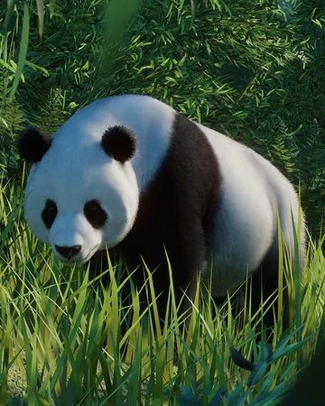
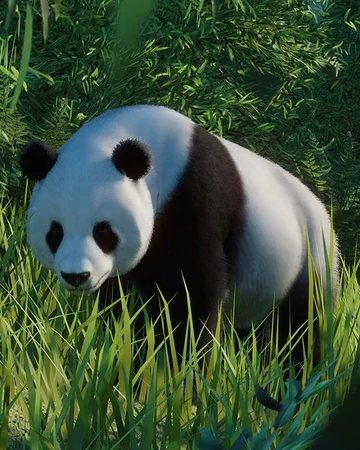

What are pandas?
The giant panda (Ailuropoda melanoleuca), also known as the panda bear (or simply the panda), is a bear species endemic to China.[4] It is characterised by its bold black-and-white coat and rotund body. The name "giant panda" is sometimes used to distinguish it from the red panda, a neighboring musteloid. Though it belongs to the order Carnivora, the giant panda is a folivore, with bamboo shoots and leaves making up more than 99% of its diet.[5] Giant pandas in the wild occasionally eat other grasses, wild tubers, or even meat in the form of birds, rodents, or carrion. In captivity, they may receive honey, eggs, fish, yams, shrub leaves, oranges, or bananas along with specially prepared food.[6]
Panda's Behavior
The giant panda is a terrestrial animal and primarily spends its life roaming and feeding in the bamboo forests of the Qinling Mountains and in the hilly province of Sichuan.[75] Giant pandas are generally solitary.[59] Each adult has a defined territory and a female is not tolerant of other females in her range. Social encounters occur primarily during the brief breeding season in which pandas in proximity to one another will gather.[76] After mating, the male leaves the female alone to raise the cub.[77] Pandas were thought to fall into the crepuscular category, those who are active twice a day, at dawn and dusk; however, Jindong Zhang found that pandas may belong to a category all of their own, with activity peaks in the morning, afternoon and midnight. Due to their sheer size, they can be active at any time of the day.[78] Activity is highest in June and decreases in late summer to autumn with an increase from November through the following March.[79] Activity is also directly related to the amount of sunlight during colder days.[79] Pandas communicate through vocalisation and scent marking such as clawing trees or spraying urine.[9] They are able to climb and take shelter in hollow trees or rock crevices, but do not establish permanent dens. For this reason, pandas do not hibernate, which is similar to other subtropical mammals, and will instead move to elevations with warmer temperatures.[80] Pandas rely primarily on spatial memory rather than visual memory.[81] Though the panda is often assumed to be docile, it has been known to attack humans, presumably out of irritation rather than aggression.[82][83][84] Pandas have been known to cover themselves in horse manure to protect themselves against cold temperatures.[85]
Gallary
 
